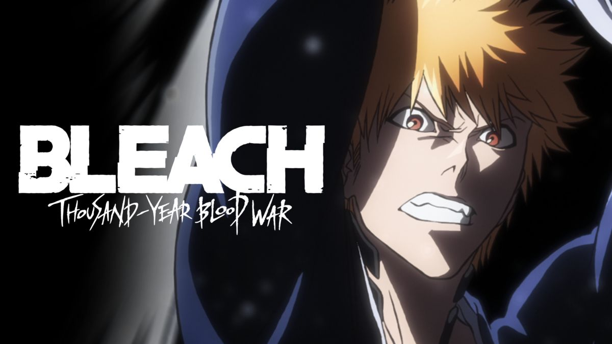

Que bom te ver por aqui, Colega
Shikai (始 解; versão inicial) é o primeiro "upgrade" formulário disponível para uma Zanpakutou . Para ativá-lo, é necessário que o Shinigami saiba o nome de sua Zanpakutou . Isto não é tão fácil como simplesmente escolher um nome, pelo fato do espírito vivo da Zanpakutou já ter o seu próprio nome.
Bankai「"Liberação Final"」é a terceira e última forma de um Zanpakutō. Antes de Ichibē Hyōsube dar a esta forma seu nome, ela era conhecida como Shinuchi「真打, True Strike」, e quando um Shinigami o alcançava, ele possuiria um "Zanpakutō Evoluído"「進化した斬魄刀, Shinkashita Zanpakutō」.
